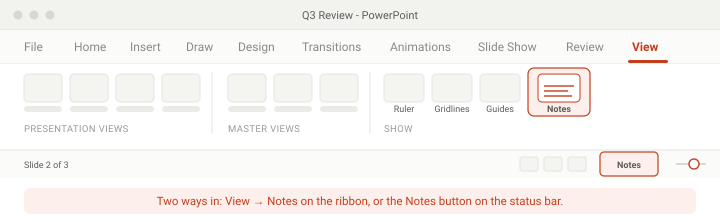
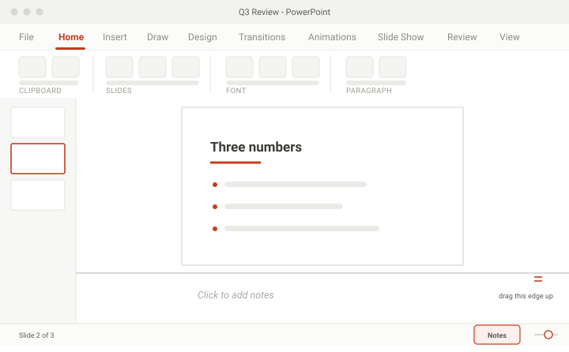
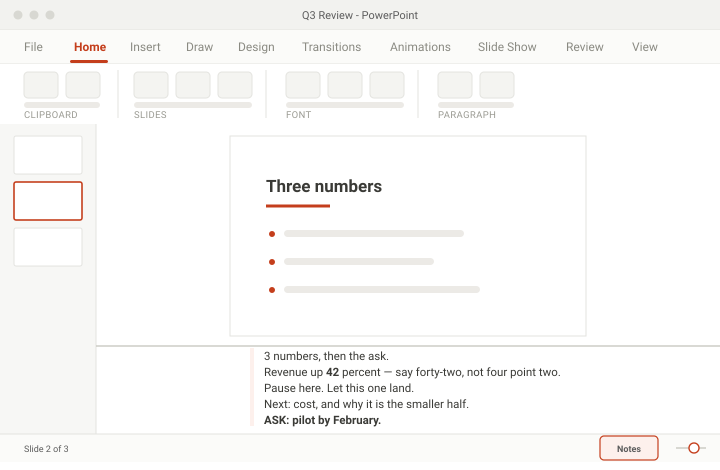
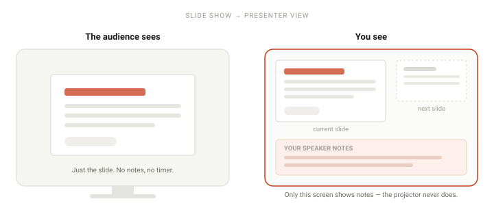
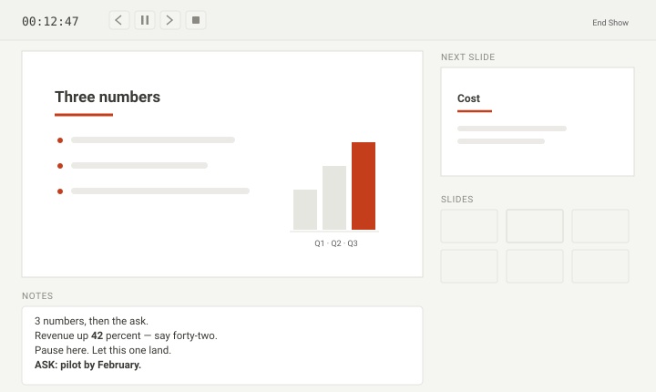
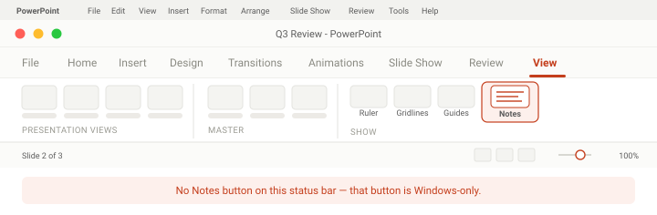
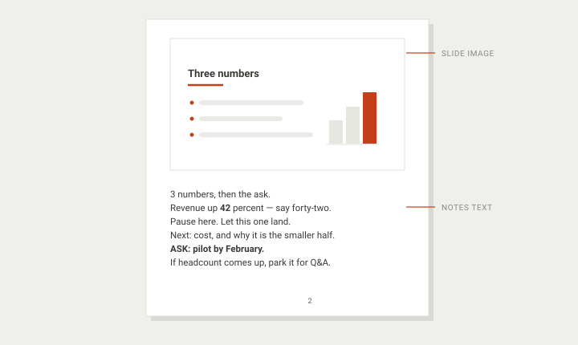
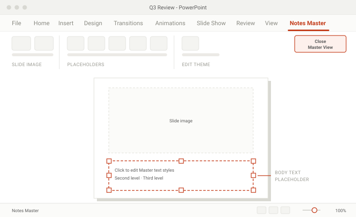
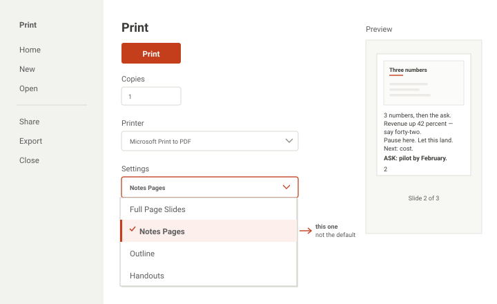

To add speaker notes in PowerPoint: select the slide in the thumbnail pane, click View → Notes to open the notes pane below the slide, then click into it and type. Notes are private — the audience never sees them. To read them while you present, turn on Slide Show → Use Presenter View.
Speaker notes are a private note area attached to each slide — text only you can see, either while editing or in Presenter View. They are the single most underused feature in PowerPoint: they are where your actual script goes, so the slide itself can stay short enough for people to read in three seconds. Here is how to add them, and how to actually use them while you are standing in front of a room.
Step by step
-
Select the slide you want to annotate
Click the slide in the thumbnail pane on the left. Notes belong to individual slides, so you are editing one slide's notes at a time — there is no document-wide notes area.
-
Open the Notes pane
Go to View → Notes, or click the Notes button in the status bar at the bottom of the window. A pane labelled "Click to add notes" opens directly beneath the slide.
Nothing happened? Your window is probably too narrow to show the pane. Maximise the PowerPoint window and try again — see the troubleshooting section below.

Two ways in. The Notes button sits in the Show group on the View tab, and the status bar at the bottom of the window carries the same button. -
Type your notes
Click into the notes area and type. You can press Enter for a new line and Tab to indent — notes support basic formatting like bold and bullet lists from the Home tab.
Write the way you speak, not the way you write. Full sentences are a trap: if you write prose, you will read it aloud, and reading aloud is the fastest way to lose a room.

The pane is open. The placeholder is where you type; drag the divider above it upward when six lines of notes start to feel cramped. -
Format the notes to be glanceable
You will be reading these at arm's length while talking, so optimise for a two-second glance rather than for completeness. Use short lines, bold the words you must not forget (a number, a name, a transition), and leave blank lines between ideas.
A format that works: one line for the point, one line for the example. If a slide needs more than six lines of notes, the slide is probably doing too much.

Glanceable, not complete. Short lines, one bold phrase each, and the ask in bold at the bottom where your eye lands last. -
Read them in Presenter View
Notes are useless if you cannot see them while presenting. Go to Slide Show → Use Presenter View and make sure the box is ticked. On Mac the same tab carries a Presenter View button instead. When you start the slideshow on a second screen, your laptop shows the current slide, your notes, and a preview of the next slide, while the projector shows only the slide.
Use the Font size buttons (the A− and A+ icons) in Presenter View to make the notes bigger without touching the slide itself.

Two different screens. The projector only ever gets the slide — your notes stay on your laptop. No second screen? Press Alt+F5 to run Presenter View in a single window on your own laptop, so you can rehearse with the real layout before you are standing in front of anyone.

The real layout. Notes sit directly under the slide you are showing, and the next slide waits on the right so you are never surprised by it. -
Print or export the notes if you need a paper backup
File → Print, then change the layout dropdown from Full Page Slides to Notes Pages. If you leave it on the default, the notes are silently dropped from the printout.
The printing section below covers PDF export, why pages come out blank, and how to get the notes out without the slide images.
On a Mac
PowerPoint for Mac uses the same View → Notes route, but two things are different enough to catch people out.
There is no Notes button in the status bar — that button is Windows-only. On a Mac the pane is toggled from the View tab alone, and the divider above it can be dragged upward to give it more room.
Printing is under a different label: File → Print opens the macOS print sheet, where the layout control is called Print What rather than a Settings dropdown. Choose Notes Pages there.

Editing and formatting your notes
The notes pane behaves like a small text box rather than a plain field. Click inside it and the Home tab works exactly as it does on a slide — font, size, bold, colour and bullets all apply to whatever you have selected.
For anything more than a quick fix, switch to View → Notes Page. That view shows one slide per page with the slide image on top and a full-size notes area underneath, and it is the exact layout that prints. Formatting done there is what you will see on paper, which makes it the better place to fix spacing than the narrow pane.

Change it once, not forty times. View → Notes Master sets the default font, size and margins for every slide's notes at once. It is the notes equivalent of the Slide Master, and it is where a page number or a confidentiality line would go if you need one on every printed page.

Keyboard and deleting
There is no single-key shortcut for the notes pane. The keyboard route is Alt, then W, then P, then N — the View tab, then the Notes button. Press them one after another, not together.
To delete a note, click into the pane, select all with Ctrl+A and press Delete. Notes live inside the slide, so deleting the slide deletes its notes with it, and there is no separate notes file to recover them from.
What to actually write in your notes
Most people use the notes pane as a second slide — they paste in the paragraph that did not fit. That is the one thing notes are not for. Notes are a prompt sheet: they hold the things you cannot see on the slide, not a transcript of the things you can.
The six-line rule
Keep each slide's notes to six lines or fewer, and treat that as a design constraint rather than a suggestion. A slide that needs more than six lines is usually three slides.
For scale: at a normal speaking pace of about 130 words a minute, a 20-minute talk is roughly 2,600 words out loud. The notes for it should be closer to 200. The gap between those two numbers is what you are supposed to know, not what you are supposed to read.
What earns a line
- Your opening sentence, word for word. The first ten seconds are the one part you cannot improvise, because you are still settling.
- Numbers, names and dates, written out. "Forty-two percent" spelled out stops you saying forty-two when you meant four point two.
- The transition. The sentence that carries you from this slide to the next is the one people drop when they are nervous.
- The single thing you must not forget to say. Put it in bold. It is usually the ask.
What does not
- Full paragraphs. You will read them aloud, and reading aloud loses a room faster than silence does.
- A repeat of the slide text. If it is already on the screen, the audience got it first.
- Anything you would have to stop and decode. If a note needs your full attention, it belongs in rehearsal, not in the room.
How to write them without rewriting the deck
Do it after the slides are finished, one slide at a time. Cover the notes pane, say that slide out loud once, and write down only what you had to invent on the spot. That is the part you will not remember on the day — and therefore the only part worth writing.
Printing your notes
This is the part people get wrong, because PowerPoint's default print layout drops the notes without warning. Go to File → Print, then open the second dropdown — the one showing Full Page Slides — and choose Notes Pages.

Notes Pages prints one slide per page with its notes underneath, using the formatting set in the Notes Master. There is no "two slides per page" option for notes pages; to save paper, print to PDF first and then send that PDF to the printer with two pages per sheet.
Exporting a PDF instead
File → Export → Create PDF/XPS, then Options, then Notes Pages. Leave the default on Slides and the notes are left out with nothing to warn you.
Pages coming out half blank? That slide has no notes. Check in View → Notes Page before printing — that view shows exactly the empty area you would get on paper.
If you need the text on its own, with no slide image on every page, use File → Export → Create Handouts and send the notes below the slides to Word, where the images can be deleted and the text printed by itself.
When it does not work
Almost every problem with speaker notes comes down to one of these five.
- The Notes pane will not appear First check View → Notes and make sure it is ticked. If it already is, you are probably in Reading View — click View → Normal to get back to the editing view, where the pane is available. A window that is too narrow is the other common cause: maximise it.
- My notes disappeared Press Ctrl+Z (⌘Z on Mac) immediately. Notes live inside the .pptx file rather than in a separate document, so if you typed notes on a copy and later opened the original, you are looking at a different file. Check the title bar for which file is open.
- Notes do not show up in Presenter View Three things to check, in order: Slide Show → Use Presenter View is ticked; you have a second display connected and are looking at the presenter's screen, not the projector; and the slideshow is actually running (F5) rather than sitting in the editing view, where Presenter View does not exist.
- The notes text is too small to read In Presenter View, use the A− / A+ buttons to resize the notes pane. To change the default for every slide, go to View → Notes Master and increase the body text size there — that is the equivalent of the Slide Master, but for notes.
- Printed notes come out blank You are almost certainly still on the default Full Page Slides print layout. Change it to Notes Pages. The same applies to PDF export, where you have to tick Notes Pages in the export options.
Frequently asked questions
- Are speaker notes visible to the audience?
- No. Notes appear only in your Presenter View and in the editing view. During a normal slideshow the audience sees just the slide — the notes are never projected. The one way to leak them is to project your laptop's screen by mistake instead of the second display, so check your display setting before the room fills up.
- Why is the Notes pane not showing in PowerPoint?
- Go to View and tick Notes. If it is already ticked, you are likely in Reading View or the window is too narrow — switch to Normal view and maximise the window.
- Can I add speaker notes in the free PowerPoint web app?
- Yes. Select View → Notes and type in the pane below the slide. The web app does not give you the full Presenter View experience, so on the web the notes are most useful for printing and export rather than for live presenting.
- Do speaker notes appear when I export to PDF?
- Only if you choose Notes Pages during export. A standard slide export leaves them out entirely.
- How do I make the speaker notes text bigger?
- Use the A− / A+ buttons in Presenter View for a quick change, or set a permanent default in View → Notes Master, which applies to every slide's notes at once.
- What is the difference between the Notes pane and Notes Page view?
- The Notes pane is the narrow strip under the slide in Normal view, and it is where you type. Notes Page view shows one full page per slide, with the slide image on top and a large notes area below, and it is the layout that actually prints. Write in the pane, format and check the print result in Notes Page view.
- How long should speaker notes be?
- Six lines or fewer per slide. A 20-minute talk is about 2,600 words spoken aloud, but its notes should be closer to 200: the opening sentence word for word, the numbers and names spelled out, and the transitions between slides. Anything longer gets read aloud, and being read aloud is what makes an audience reach for their phone.
- Can I print only the notes, without the slide images?
- Not with the Notes Pages layout, which always puts a slide image above the text. To get notes on their own, use File → Export → Create Handouts and send the notes below the slides to Word, where the images can be deleted and the text printed by itself.
Official references
- Add speaker notes to your slides Microsoft's own steps for the Notes pane and notes pages.
- Present slide shows Presenter View, which is where notes are actually read from.